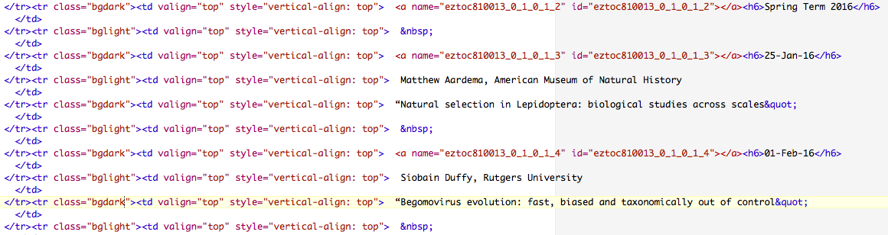

Topics: Counting Revisited: Using Dictionaries to accumulate pattern counts; Scraping data from the web; Parsing Structured Data: genbank & SQL
gencode = {'ATA':'I', 'ATC':'I', 'ATT':'I', 'ATG':'M', 'ACA':'T',
'ACC':'T', 'ACG':'T', 'ACT':'T', 'AAC':'N', 'AAT':'N',
'AAA':'K', 'AAG':'K', 'AGC':'S', 'AGT':'S', 'AGA':'R',
'AGG':'R', 'CTA':'L', 'CTC':'L', 'CTG':'L', 'CTT':'L',
'CCA':'P', 'CCC':'P', 'CCG':'P', 'CCT':'P', 'CAC':'H',
'CAT':'H', 'CAA':'Q', 'CAG':'Q', 'CGA':'R', 'CGC':'R',
'CGG':'R', 'CGT':'R', 'GTA':'V', 'GTC':'V', 'GTG':'V',
'GTT':'V', 'GCA':'A', 'GCC':'A', 'GCG':'A', 'GCT':'A',
'GAC':'D', 'GAT':'D', 'GAA':'E', 'GAG':'E', 'GGA':'G',
'GGC':'G', 'GGG':'G', 'GGT':'G', 'TCA':'S', 'TCC':'S',
'TCG':'S', 'TCT':'S', 'TTC':'F', 'TTT':'F', 'TTA':'L',
'TTG':'L', 'TAC':'Y', 'TAT':'Y', 'TAA':'_', 'TAG':'_',
'TGC':'C', 'TGT':'C', 'TGA':'_', 'TGG':'W'}
('_' is used for the stop in this table from pythonForBiologists).
Using this dictionary, we can quickly look up amino acid codes for codons. For example,
print "The code for CTT is:", gencode["CTT"]
Our first program will take translate a DNA strand into the corresponding protein. That is, it will look at the dna as three letter chunks (codons), look up each in the dictionary of values. To make it easier to reuse, we will define a function:
def translate(dna): """ Returns the dna translated into corresponding protein. """Once defined, we can use the function to translate any DNA strand:
>>> dna = 'GATGGAACTTGACTACGTAAA' >>> print dna, 'translates to', translate(dna) GATGGAACTTGACTACGTAAA translates to DG
How can we do this? First, let's think about how we would do this by hand. Given a DNA strand, we would split it into codons (three letter substrings). For example, the strand above would be:
GAT GGA ACT TGA CTA CGT AAAWe would then translate each one by using the look-up table:
D G T _ L R Kand then glue together to get the translation DGT_LRK.
Let's follow that same strategy in Python. Implement each of the steps below:
Using dictionaries, counting becomes much easier. One of our earlier challenges was to count the number of base pairs in a sequence:
dna = 'GATGGAACTTGACTACGTAAATT'Our initial approach set up a separate counter for each possibilities and then looped through the string, counting as it went:
numA = 0
numC = 0
numG = 0
numT = 0
for bp in dna:
if bp == 'A':
numA += 1
elif bp == 'C':
numC += 1
elif bp == 'G':
numG += 1
elif bp == 'T':
numT += 1
print "A:", numA, "C:", numC, "G:", numG, "T:", numT
Or to use count() to traverse the string for each basepair:
numA = dna.count('A')
numC = dna.count('C')
numG = dna.count('G')
numT = dna.count('T')
print "A:", numA, "C:", numC, "G:", numG, "T:", numT"
We can approach this again, using dictionaries. The 'keys' for the dictionary will be the basepairs, and for each key, its value will be the number of times it occurs in the string. We only need to initalize one variable, the dictionary, instead of counters for each variable:
bpCounts = {}
for bp in dna:
if bp in bpCounts: #Occurred before, just increment count
bpCounts[bp] += 1
else: #First time, set to 1
bpCounts[bp] = 1
print bpCounts
Using the get() function, we can make this even shorter:
bpCounts = {}
for bp in dna:
bpCounts[bp] = bpCounts.get(bp,0) + 1
print bpCounts
Test the code on different values for the variable dna.
Webpages are formatted using the HyperText Markup Language (HTML) which is a series of commands on how the pages should be formatted, along with links and embedded calls to programs. For example, if you would like a word to show up in bold, you surround it by "tags" that say what to do:
<b>bold</b>The opening tag starts the bold text and the closing tag (indicated by the '/') ends the bold text. Most HTML commands follow this same style: there's an opening tag, paired with a closing text that includes a '/' and the same name.
We can access files stored on webpages inside Python. The built-in urllib module has functions to mimic the file I/O we have seen before.
Let's say we want to make a list of all the RGGS seminars for the term. We can `scrap the data' on the comparative biology seminar page into our Python program. We can then search for strings that look like dates and print out the subsequent lines. The interface is very similarly to opening files:
The museum's webpage is machine generated (you can look at the raw code by saving the HTML file and then opening it with TextEdit, TextWrangler, or some other editor meant for text files). The code is very clean with no missing ending tags (unlike the HTML for the page you're currently reading...).
Here are the first couple of lines with the seminar dates:

We can search the file for dates, and then print out the subsequent lines with the speaker and title. We can do this in several different ways. Here's one approach:
We are just missing the tools to open webpages. There are several options (both built-in and modules you can download). The simplest is urllib (and its related urllib2 and requests). Let's work with urllib2 since it's very common. First we need to import the module:
import urllib2
To open a webpage:
webpage = urllib2.urlopen("http://www.amnh.org/our-research/richard-gilder-graduate-school/academics-and-research/seminars-and-conferences")
which will now functions like a file handler for files stored locally. (This will take a bit depending on network connectivity.)
We can use it in with our standard reading functions: read(), readline() and readlines(). For example,
lines = webpage.readlines()
Now, each line of the webpage is in the variable lines, and we can loop through it. Here's an outline: it traverses the list by line number since we'll want to refer to the lines after it (where the name and titles are stored):
for i in range(len(lines)): #Check if the lines[i] has a date in it (can use find() or regular expressions) #If it does print it, # as well as the subsequent lines[i+2] (has name) and # lines[i+4] (has title)
Test and debug your program and then figure out how to print just the date, name, affiliation, and title (without the HTML formatting statements).
Below follows the excellent tutorial from the CFAR Workshop at Duke (the goal of which is to "teach researchers how to use the Unix shell, the Python programming language, databases and image manipulation tools to execute common scientific chores" in 4 days (wow!).
BioPython is a package of useful functions for biological tasks. It is not a default part of Python and can be downloaded by:
conda install biopython
It has a wide-ranging set of functions, but today, we will just use the functions that access the NCBI databases. To use those, your code should begin:
from Bio import EntrezNCBI requires an email from each user:
Entrez.email = "kstjohn@amnh.org" #Replace with your own!Let's check what we have access to:
handle = Entrez.einfo() record = Entrez.read(handle) record["DbList"]
will print out all the databases that you can query.
To find out information about a given database, we can repeat the einfo() call, but with a parameter specifying the database:
handle = Entrez.einfo(db="pubmed") record = Entrez.read(handle) record["DbInfo"]["Description"] #Description of the database record["DbInfo"]["Count"] #Number of entries in pubmed
Try with several of the other databases from the DbList that you printed above. What do they do? How big are there?
You can search the database for a given term (for example all entries that contain biopython):
handle = Entrez.esearch(db="pubmed", term="biopython") record = Entrez.read(handle) record["IdList"]
What entries contain "AMNH"?
We can also fetch individual entries from a database:
handle = Entrez.efetch(db="pubmed", id="21210977") print handle.read()
What is the first entry in pubmed that contains "AMNH"?
Let's get some sequences! We can use the same ideas on the sequence databases:
handle = Entrez.esearch(db="nucleotide",term="Cypripedioideae[Orgn] AND matK[Gene]") record = Entrez.read(handle) record["Count"]will give the number of entries for the matK gene in Cypripedioideae.
Try with your favorite species/gene! We will use the SeqIO functions (sequence I/O) of bioPython to print sequences from the nucleotide database:
from Bio import Entrez, SeqIO
handle = Entrez.efetch(db="nucleotide", id="186972394",rettype="gb", retmode="text")
for record in SeqIO.parse(handle, "genbank"):
print "Genbank id:\t", record.id
print "Sequence:\t"record.seq
print "Entry length:\t", len(record)
handle.close()
The options "gb" and "text" refer to genbank text format. Feel free to use the ID above, or substitute one of your own.
Combining these, we can filter search results. For example, say we only want to take the short sequences from a search (stored in from cor6_6.gb) and store in a FASTA file:
# From biopython.org tutorial:
from Bio import SeqIO
short_sequences = [] # Setup an empty list
for record in SeqIO.parse(open("cor6_6.gb", "rU"), "genbank") :
if len(record.seq) < 300:
# Add this record to our list
short_sequences.append(record)
print "Found {0} short sequences".format(len(short_sequences))
output_handle = open("short_seqs.fasta", "w")
SeqIO.write(short_sequences, output_handle, "fasta")
output_handle.close()
I promised SQL files, but writing up the details of the lab, I realized that it was too long. We are postponing SQL to a later lab when there's more time to introduce the details of the language, using a simple server, and the standard access modules. Apologies!
For each lab, you should submit a lab report by the target date to: kstjohn AT amnh DOT org. The reports should be about a page for the first labs and contain the following:
Target Date: 30 March 2016
Title: Lab 8: Dictionaries & Structured Data
Name & Email:
Purpose: Give summary of what was done in this lab.
Procedure: Describe step-by-step what you did (include programs or program outlines).
Results: If applicable, show all data collected. Including screen shots is fine (can capture via the Grab program).
Discussion: Give a short explanation and interpretation of your results here.
This course will use the on-line Rosalind system for submitting programs electronically. The password for the course has been sent to your email. Before leaving lab today, complete the first two challenges.